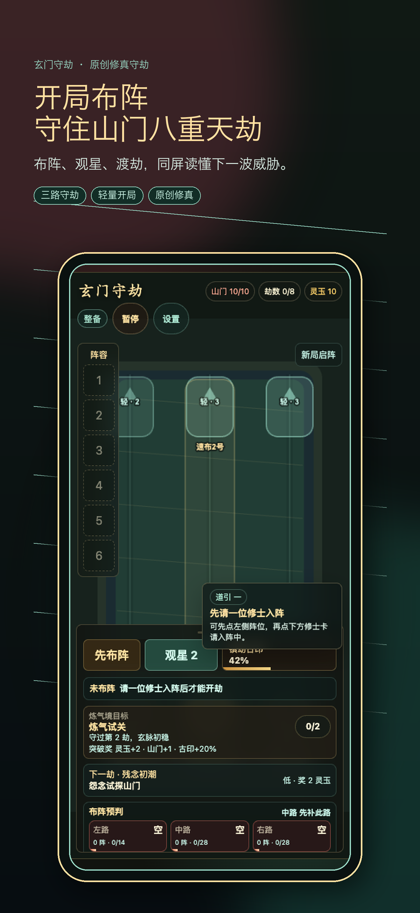
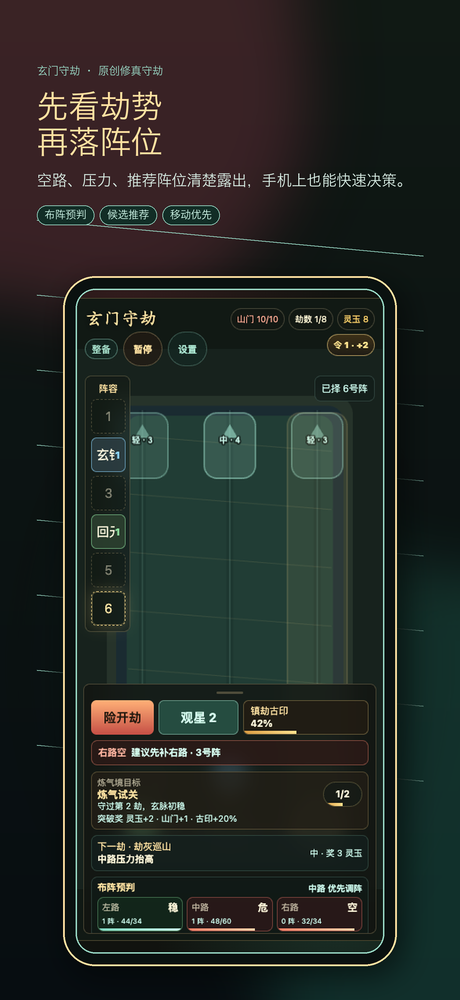
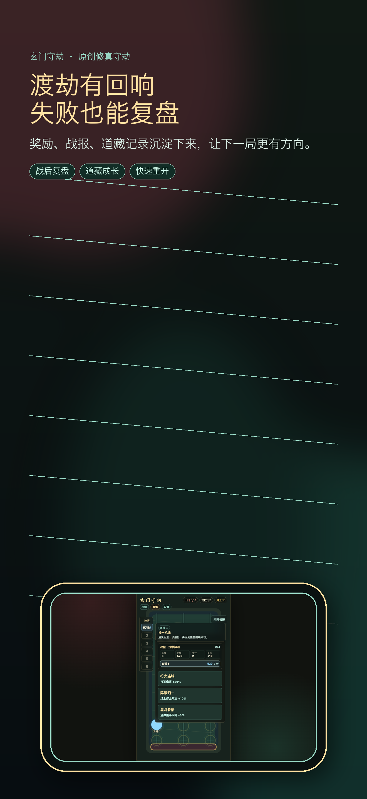
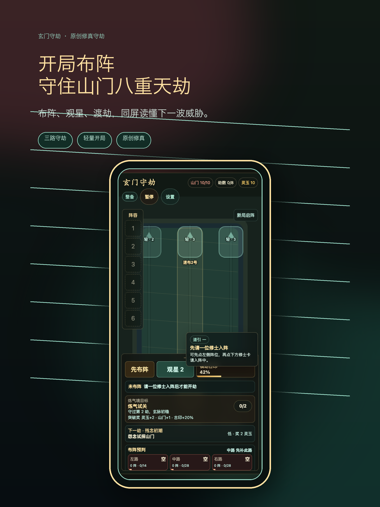
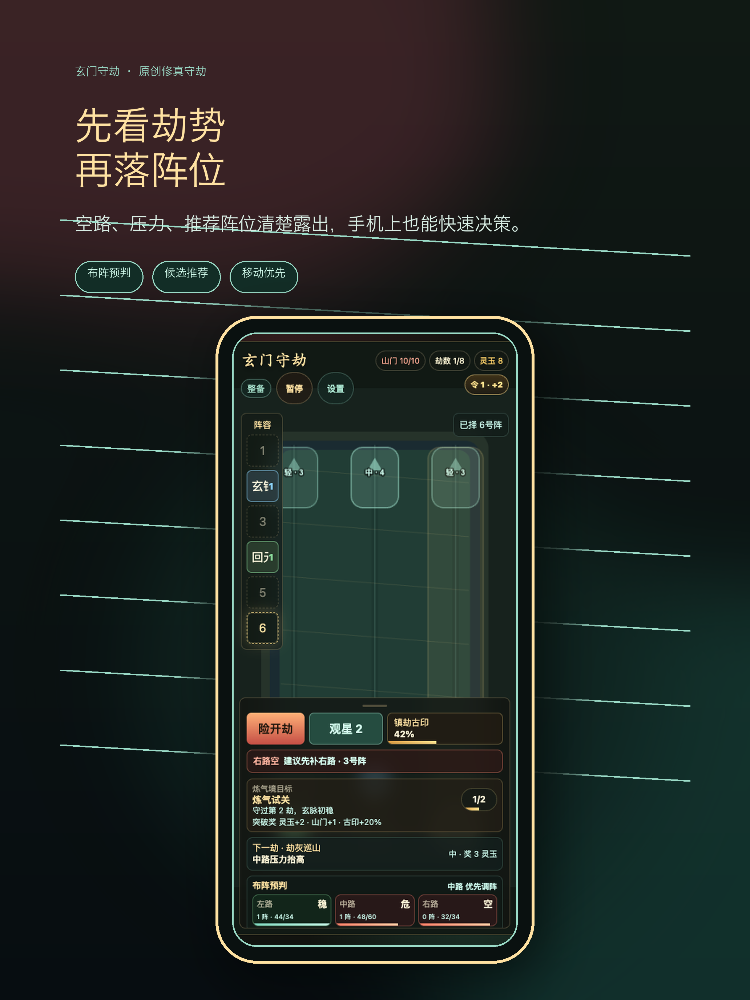
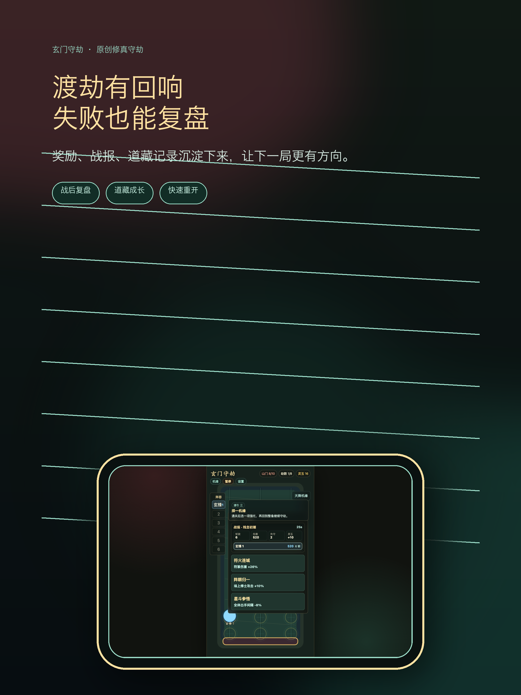

本页面已配置公开支持入口。若后续支持渠道变化，请同步更新 App Store Connect 元数据。
玄门守劫产品页草稿
最后更新：2026-07-01
《玄门守劫》是一款原创修真题材的轻量策略守关游戏。玩家执掌初立山门，在三路劫潮前布阵、观星、招募修士，并用镇劫古印扭转险局。
核心卖点
- 三路守劫：读懂每一路压力，再决定落阵和开劫时机。
- 观星招募：用有限灵玉换取合适修士，形成短局决策。
- 道藏成长：战报、奖励和记录沉淀下来，让失败也有方向。
- 移动优先：界面围绕竖屏触控、清晰反馈和快速重开设计。
商店截图
当前本地生成的截图位于：
output/store/iphone-6.9/output/store/ipad-13/
宣传短句
布阵、观星、渡劫，在三路劫潮中守住山门。
上线信息
- 营销页 URL：https://donext.github.io/xuanmen-shoujie-pages/marketing.html
- 支持页 URL：https://donext.github.io/xuanmen-shoujie-pages/support.html
- 隐私政策 URL：https://donext.github.io/xuanmen-shoujie-pages/privacy.html
- 公开支持入口：https://github.com/DoNext/xuanmen-shoujie-pages/issues
商店截图预览





